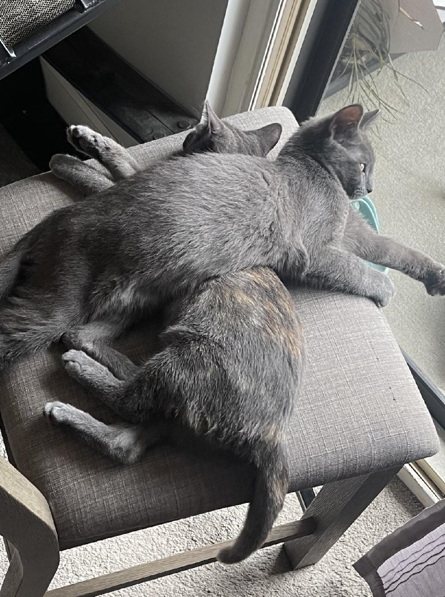
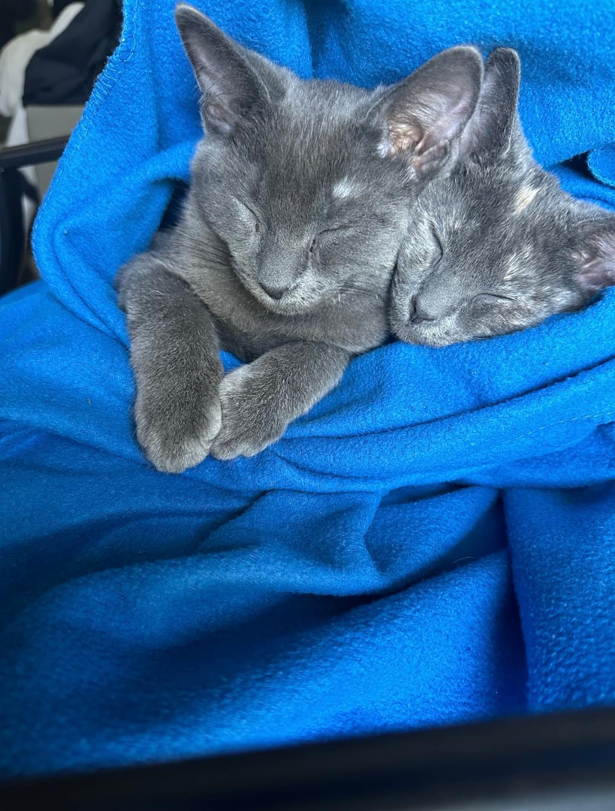

Meet Bruno and Diva, two sibling cats who share a playful bond filled with curiosity about the world around them. Each day starts and ends with an energetic chase around the house, Diva darting ahead while Bruno tries to outmaneuver her. After breakfast, they spend hours lounging in sunbeams, grooming each other, and watching birds from the window. Bruno loves to climb and explore, often finding high perches, while Diva prefers hiding in cozy spots. In the evenings, they curl up together, purring contentedly as they settle in for a peaceful nap, ready to start their playful routine all over again the next day.
